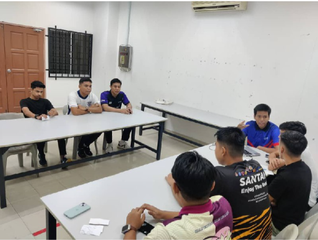
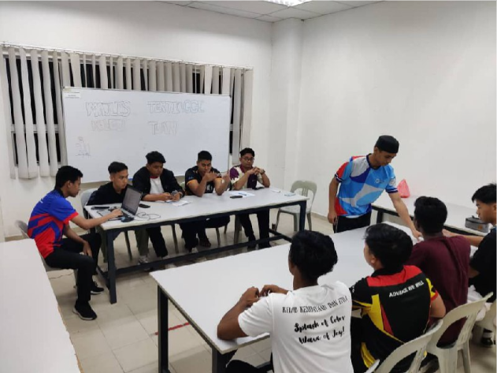
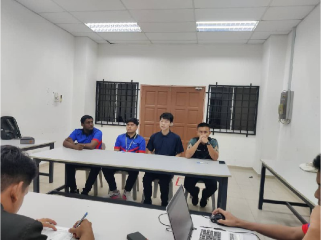
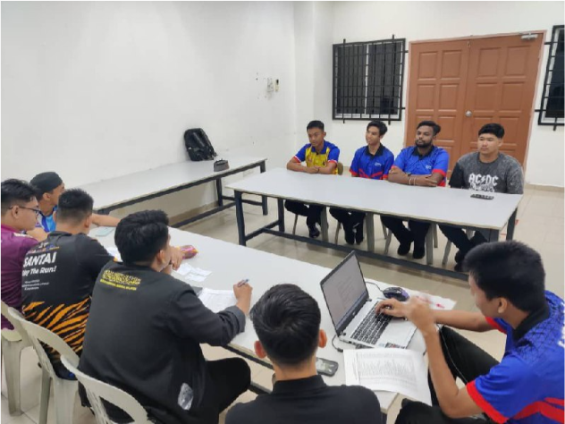

Lensa




2. Temuduga MTKT [12 dan 13 November 2024]
Bilik Mesyuarat PPKP: Temuduga pengambilan ahli baharu MTKT Sidang 2024/2025 telah dijalankan kepada semua calon yang memohon. Penglibatan calon semasa temuduga adalah seramai 36 orang dan proses temuduga ini dilaksanakan bagi memastikan MTKT memilih calon-calon yang mempunyai bakat dan kepimpinan yang tinggi serta komited untuk melaksanakan tugas dalam badan pelajar ini. Penasihat Bersama (Tc. Ahmad Azhan Fikry bin Zabidi) juga turut hadir ke temuduga ini dan beramah mesra dengan calon-calon yang terlibat. Semua agenda berjalan dengan lancar dan majlis ditangguhkan pada jam 2300.